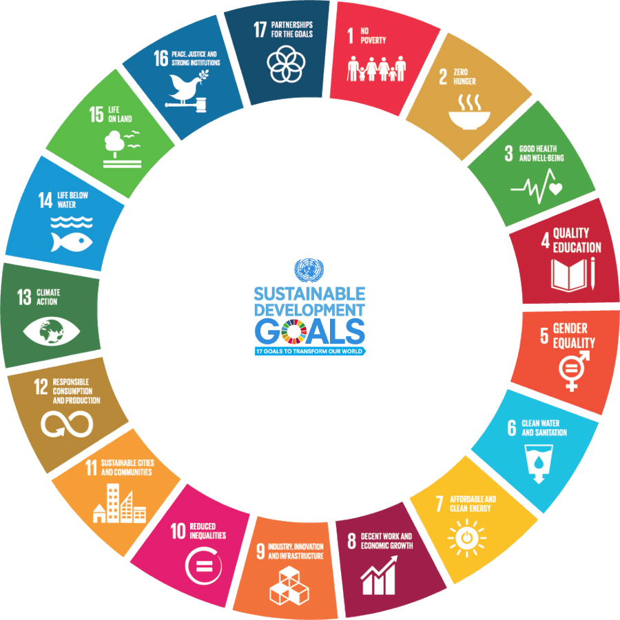

The Sustainable Development Goals are the blueprint to achieve a better and more sustainable future for all.
They address the global challenges we face, including those related to poverty, inequality, climate change, environmental degradation, peace and justice.
The 17 Goals are all interconnected, and in order to leave no one behind, it is important that we achieve them all by 2030.
Click on select goals to learn more about them.
